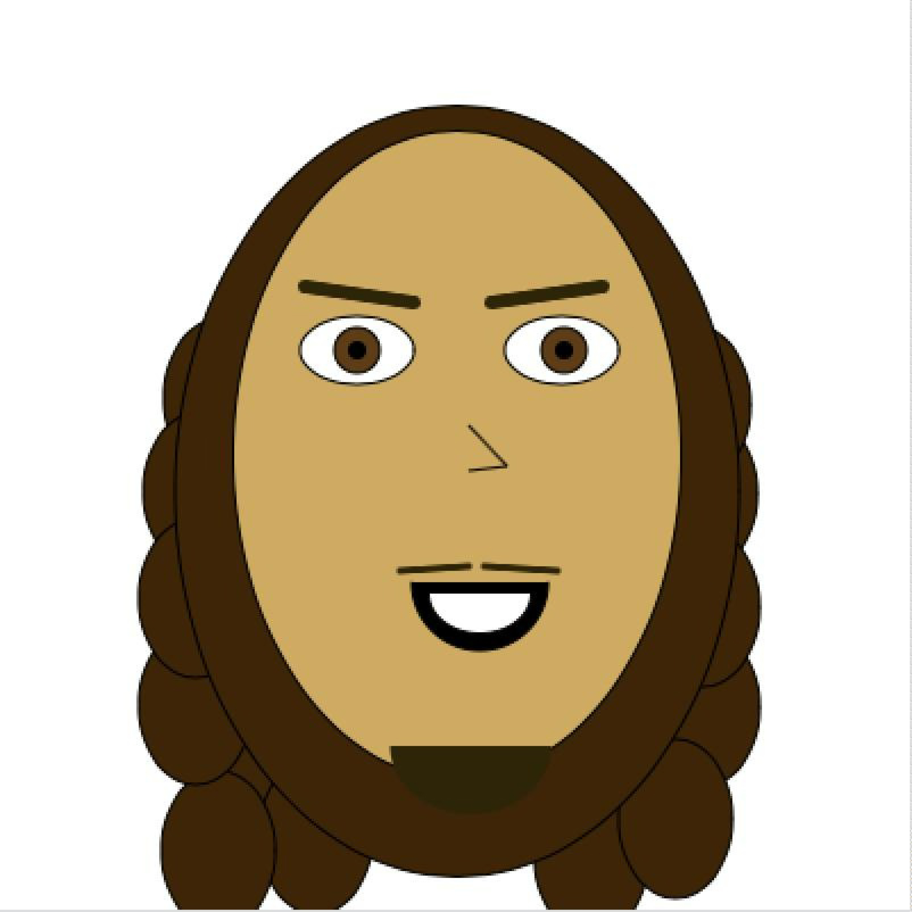
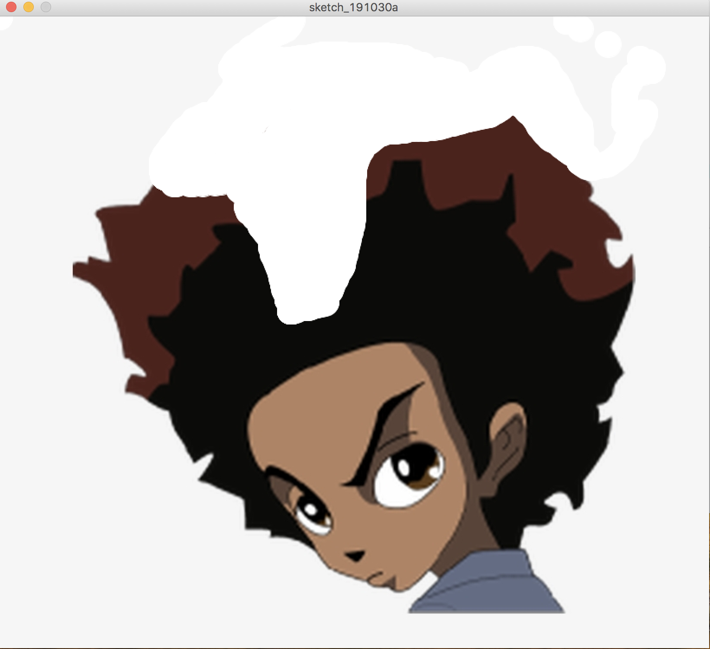
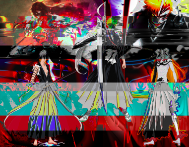

Code/Video
This piece is a video edit titled "Off Ya Feet Mixtape" and it was created using Adobe After Effects. The media in this includes a song and some video game clips. I synced the video clips to match the speed/tempo of the song, essentially creating a highlight tape.
This piece was a video edit of someone who was transferring from a junior college to a state school to play basketball. I used a song and video clips of her choosing to create a congratulatory video for her big achievement.
This is one of the first attempts of mine using code to create art. I had to make a self portrait using Processing and I did that by using simple shape commands. After that I colored the shapes in to achieve something that resembles myself.
This piece is a video edit titled "Zilla Tape" and it was created using Adobe After Effects. The media in this includes a song and some video game clips. I synced the video clips to match the speed/tempo of the song, essentially creating a highlight tape.
This piece is a video edit titled "Tribe Tape" and it was created using Adobe After Effects. The media in this includes a song and some video game clips. I synced the video clips to match the speed/tempo of the song, essentially creating a highlight tape.
This piece was created in Processing and is used as a hair cutting simulator. I brought an image in and made the background white. I inserted an animation that paints white as you hover over the image and paints brown back in when you click. This makes it to where you can take hair away and paint it back in if you messed up.
Photoshop

This piece is titled Balance and is based off a character from one of my favorite anime. The medium consists of web images and Photoshop. I wanted to show appreciation for one my favorite show so I decided to highlight the main character's ability to use two different elements.

This piece here is titled "Back from the Sto'" and this was the cover art for a local rapper's EP on Soundcloud. The medium is Photoshop and we were going for a vintage look for his cover art.
This piece is titled 'Glitchigo' with its medium being Photoshop as well as Audacity. I started off creating a collage type of piece for a character from an anime I have watched. Once I finished that up in Photoshop, I took the file to Audacity and messed with certain effects in that software to obtain the glitch effects.

This piece is titled "Skinniblk" and was made for a local DJ using Photoshop. This DJ wanted me to create a logo for him and gave me full range of freedom to come up with a logo. He is an EDM DJ so I wanted to capture the electric feel EDM brings using flames and vibrant colors.

This piece is titled "The Last Uchiha" and was created using Photoshop. This piece was printed out as a poster with its dimensions being 21" x 15". This piece was inspired by my favorite character from one of my favorite anime and I just wanted to show my appreciation for the show. This poster got me into an art exhibit and someone even tried to buy it right off the wall while it was being displayed!